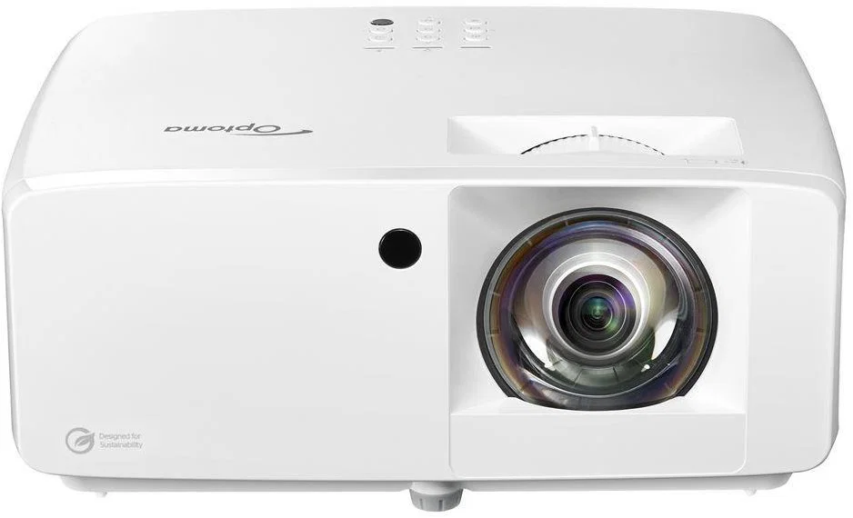

Optoma
GT2100HDR.
Velký obraz pro film, sport, prezentaci nebo akci.

Promítání ve velkém.
Laserový projektor s ultra krátkou projekční vzdáleností, poměrem stran 16:9 a svítivostí 5 000 ANSI lm. Podporuje také vstup 4K UHD/HDR. Díky krátké projekční vzdálenosti vytvoří obraz přibližně 100″ už z něco málo přes jednoho metru – vhodné pro filmy, sport, prezentace i akce.
Doplňky k pronájmu.
HDMI kabel 20 m
Dlouhý HDMI kabel pro propojení projektoru s notebookem, přehrávačem nebo jiným zdrojem obrazu.
PremiumCord Jack 3,5 mm, 10 m
Audio kabel Jack M 3,5 → Jack M 3,5 pro propojení telefonu, notebooku nebo dalšího zdroje zvuku.
Vention Wireless HDMI
Bezdrátový HDMI vysílač a přijímač pro přenos obrazu a zvuku bez dlouhého HDMI kabelu.
Optoma DS-9092PWC
Projekční plátno 92″ ve formátu 16:9. Obrazová plocha přibližně 203 × 114,5 cm. Plátno je nutné zavěsit nebo upevnit na vhodnou konstrukci či pevný bod. Konstrukce ani stojan pro zavěšení nejsou součástí pronájmu.
JBL PartyBox Wireless Mic
Sada 2 bezdrátových mikrofonů. Dosah až 30 m a výdrž mikrofonů až 20 hodin.
Veles-X stojany
Nastavitelné stojany pro reproduktory. Lze půjčit jeden nebo oba.
200 Kč / 2 ks / den